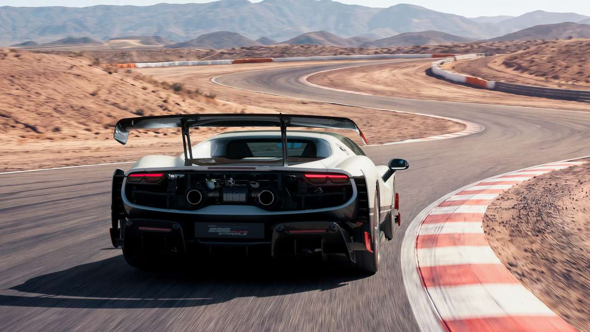
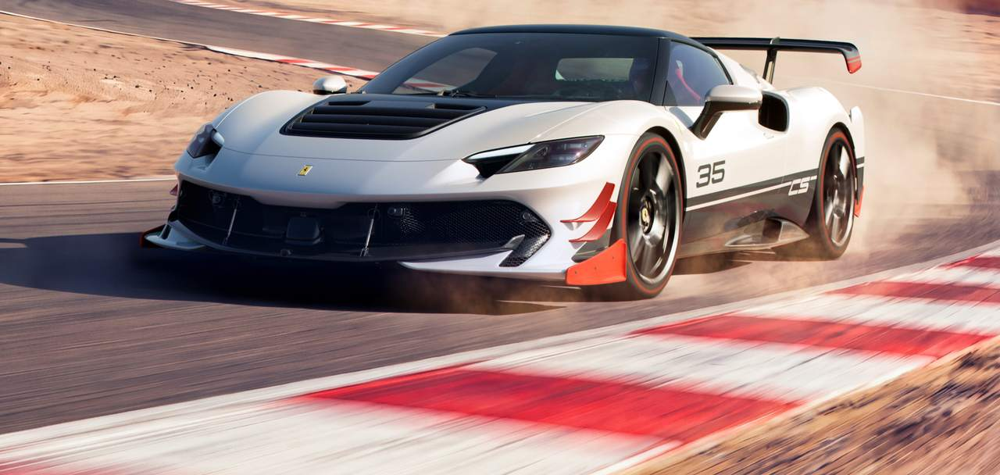
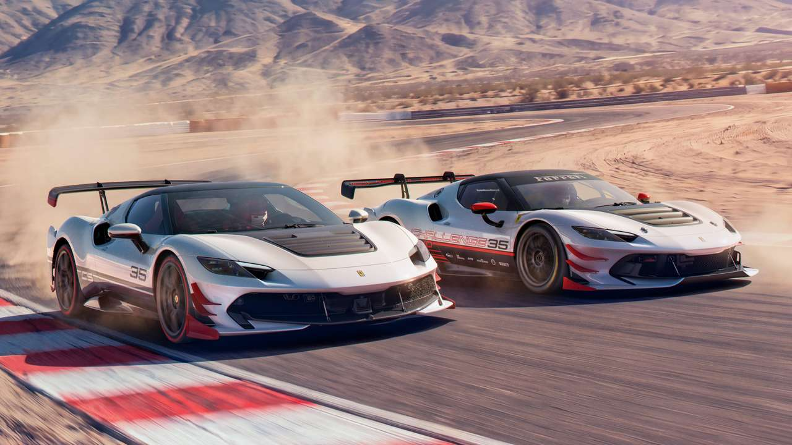

Ferrari · 全球首發 · 義大利2026-11-21
Ferrari 296 Challenge Stradale：拆掉油電系統、外露賽車空力的公路版
Ferrari 296 Challenge Stradale Is the Purest Prancing Horse in Years
Ferrari 11/21 在巴塞隆納賽道同時發表 296 Challenge Stradale 與賽車 296 Challenge Evo。公路版拿掉 296 GTB 的電池與電動馬達，只留 3.0 升雙渦輪 V6（670 匹），減重約 140 公斤；Challenge Stradale 之名是 360 CS 停產後首度回歸，義大利售價 29.1 萬歐元。
設計解析 Design Notes
- 空力外露碳纖維尾翼、前保桿導流翼片、可調前下擾流與開孔引擎蓋幾乎直接取自賽車版，只為公路法規做了調整。
- 引擎蓋開孔擋風玻璃前的兩個開孔把兩具前置散熱器的熱氣導過車頂往後排，減少離地高度變化造成的空力波動。
- 尾翼致敬固定式尾翼造型呼應 F40；配合平整化底盤與前三對、後兩對渦流產生器，250 km/h 時下壓力約 617 公斤。
- 純粹化引擎室裡不再有橘色高壓線；後網罩重新出現 Challenge Stradale 字樣，強調最接近賽車的公路 Ferrari。